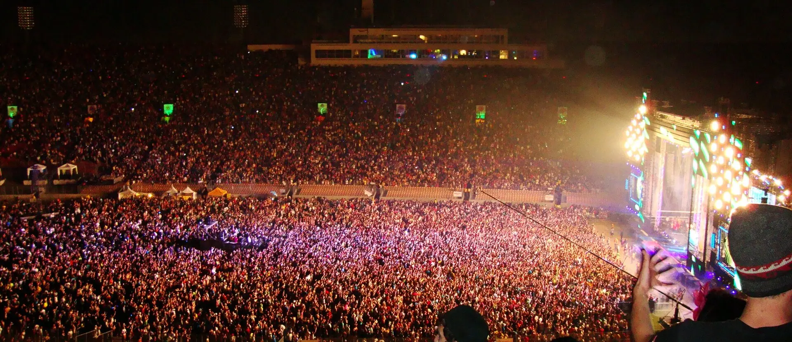

Aero Rooftop Bar & Lounge
Downtown
House and EDM under open skies, stated plainly by the venue itself. The reliable commercial house room, at rooftop scale above Orange Avenue.

407 FYI · House, Techno & EDM
407 FYI · A Nightlife GuideOrlando helped invent an American dance sound in the 1990s, lost it to a crackdown, and now hosts one of the country's biggest electronic festivals each fall, while the local crews keep the small rooms alive.
The rooms and crews below are the guide's own listings, checked against venue, promoter and festival sources in October 2026. For what is on this month, the events calendar carries the dates.
Electric Daisy Carnival, Los Angeles, 2010. Photo: “Electric Daisy Carnival 2010 Los Angeles” by Npatchett at English Wikipedia, public domain, via Wikimedia Commons.
Where It Plays
Orlando's electronic scene is event driven. The same city holds a rooftop built on commercial house, a sushi spot that doubles as the underground's clubhouse, and a tire building from 1930 that graduated from the rave era to the touring circuit. Start with the sound you want.
Downtown
House and EDM under open skies, stated plainly by the venue itself. The reliable commercial house room, at rooftop scale above Orange Avenue.
Downtown
Stacked rooms on Magnolia Avenue. House and tech house headline the bills, a speakeasy sits below, and the rooftop can carry a different sound on the same night.
Downtown
A vinyl only DJ bar: records on an analog sound system, working the soul, disco and house end of the shelf at listening volume.
Orlando's underground does not live behind one door. It lives in a Milk District sushi spot and in the crews who take rooms over for a night, so follow the names in the crews section as closely as the addresses.
Milk District
The scene's clubhouse, hiding inside a sushi spot. Trance nights, drum and bass tour stops, house till late, and daytime techno parties when the crews take over.
Downtown
A brunch to club room on South Orange Avenue. Its techno nights are talked about, but current listings lean brunch and party anthems, so count techno here as occasional rather than a standing room.
Downtown
Orlando's main mid size touring room, inside the historic Firestone building. House, techno, trance and dubstep rotate bill by bill, and Insomniac runs its official EDC parties here.
Downtown
The big two floor club formerly known as Tier. Today's mix runs college, hip hop and Latin nights more than the touring EDM it was built on.
Downtown
An LED lit room in the Beacham complex, rotating EDM, hip hop and reggaeton with the booking.
Downtown
A restaurant and lounge that deepens into a club room as the night goes on. Moody rather than maximal.
Downtown
A one block bar crawl that lists EDM among its sounds, and the anchor of downtown's biggest party nights, Halloween and New Year's Eve above all.
Downtown
The room where Aahz happened. A touring live music hall today, and still home to the AAHZ Thanksgiving Eve reunion.
Downtown
The Beacham's connected sister room. Bands most nights, live electronic acts as special events.
Winter Park
Not house or techno, and proudly so: the city's surviving new wave and alternative dance floor, now settled in Winter Park.
The concert halls get their electronic moments too. House of Blues at Disney Springs and Hard Rock Live at CityWalk are live music rooms that occasionally host electronic and heritage bills, House of Blues including a Florida breaks bill with DJ Icey, DJ Magic Mike and DJ Sandy.
Who Throws It
Rooms are only half the map. These are the promoters and party crews whose names on a flyer tell you what the night will actually sound like.
The dominant electronic promoter in Orlando, through EDC and its official party network. Factory 93 is its house and techno arm and Bassrush its bass arm. Insomniac co presents the official EDC pre parties and afterparties at The Vanguard, and afterparties at Celine.
The most visible local co promoter on the Celine calendar, working across house, bass, hard dance and drum and bass bills, sometimes alongside national promoters.
The underground techno crew. Its parties land irregularly, roughly monthly, in small rooms: daytime sessions at Iron Cow, and a tenth anniversary festival weekend takeover at Mango's Tropical Cafe on International Drive in November 2026.
Orlando's drum and bass movement, established in 1999 and led by founder and resident DJ Circle K. One of the longest running drum and bass nights in America, it moves room to room and currently lands at Iron Cow.
The recurring trance night from Suzy Solar and Solar Power Music, built as a home for the trance family, with international guests and local residents. Its current home base is Iron Cow.
The independent concert promoter behind The Social and The Beacham, calling itself Central Florida's premier independent concert promoter. Mostly live bands, with the AAHZ heritage night as its electronic exception.
The 1990s Beacham night survives as a heritage brand. Its Thanksgiving Eve gathering at The Beacham is an annual reunion for Orlando's original rave generation, built around era DJs Kimball Collins and DJ Icey.
A generation earlier, HTG Events ran the touring bass and EDM bills of the Gilt era. That era is history now; the rooms and crews above are the current map.
The Calendar
The scene has a shape across the year. Two festival peaks, two nights that belong to tradition, and one month that belongs to somebody else.
November is the peak. EDC Orlando runs November 6 to 8, 2026 at Tinker Field, Insomniac's East Coast edition and a destination scale festival. Downtown becomes its second site: official pre parties and afterparties at The Vanguard and Celine, and spillover bills across downtown rooms, reaching spots like Elixir Kitchen and Bar. Locals call the whole stretch EDC week.
April is the bass anchor. Forbidden Kingdom, presented by Bassrush, takes the Central Florida Fairgrounds. The 2026 edition ran April 25 and 26: dubstep, drum and bass and riddim, well below EDC's scale and built for the bass crowd specifically.
October stacks up. Pride weekend brings DJs and drag performers to Lake Eola Park for Come Out With Pride on October 17, 2026. A few weeks out from EDC, the Halloween season runs at club and block party scale, Wall Street Plaza above all. Orlando's Halloween is a club holiday, not a festival one.
Two nights belong to tradition. Thanksgiving Eve belongs to the AAHZ reunion at The Beacham, where the original room fills with the original generation. New Year's Eve belongs to the block parties: Wall Street Plaza downtown and the Orange Ball Drop street party in Thornton Park.
March belongs to Miami. Ultra and Miami Music Week are a drive south, and no Orlando satellite circuit comes with them. Orlando gets ordinary touring bills that month; its own peaks are April, October and November.
For this month's actual dates, rooms and bills, see the events calendar, which is rebuilt at the start of every month.
How Orlando Got This Sound
In 1988, an acid house night at the Beacham Theatre on North Orange Avenue reshaped itself into AAHZ, a house music dance party that drew people from across Florida. Residents Kimball Collins and Dave Cannalte presided over the Saturday nights, and Orlando Weekly later wrote that they kick started an underground culture, spawned countless DJ careers, and gave Orlando its own summer of love in 1991 and 1992. At the time, only New York, San Francisco and Los Angeles had comparable scenes, and theirs were warehouse based. Orlando had a headquarters in the heart of downtown.
What the city exported was breaks. Braided from hip hop, Miami bass and electro, the breakbeat style was Orlando's original contribution to dance music, and it was named in real time: the Orlando Sentinel's 1997 feature was titled "The Orlando Sound." DJ Icey was the export engine, melding those ingredients during his residency at the Edge, founding his label Zone Records in 1993, and signing to Pete Tong's FFRR, which carried the sound to Britain. Chris Fortier, who came up under Collins and Cannalte, became the second pillar, producing as Fade and spreading the music through his Balance Record Pool. Baby Anne, recording for Zone among her labels, took the style to the national dance charts.
The rooms scaled with the sound. Insomniac's own history of the Florida scene calls the Edge, in the summer of 1993, the place where the Florida interpretation of rave was born. The scene then shifted to the Club at Firestone, in the 1930 Firestone tire building on Orange Avenue, a room Rolling Stone proclaimed the best dance club in the Southeast. That room never left: it is The Vanguard, Orlando's touring electronic room today.
The turn came from city hall. In 1997 Orlando passed its Rave Ordinance, a curfew that forced bars and clubs to close at 3 a.m., and a Florida law the same year barred licensed premises from being used for parties in the hours when alcohol sales were prohibited. The federal RAVE Act followed in 2003, expanding liability for promoters and venue owners. The word rave itself became unusable for a period; the weekly scene thinned to occasional one offs, and only the major festivals that could afford security and lawyers thrived.
The lineage runs straight to the present. EDC arrived at Tinker Field in 2011 and grew from a two day spring event into the November festival that now bends the whole city's calendar. The era never fully left the stage: AAHZ reunion bills return to The Beacham in the original room, breaks bills surface at House of Blues, and Rabbit in the Moon, central to the Florida rave story, played EDC Orlando in 2016.
This history is also a record collection. Pico Nebula is the guide editor's own DJ archive, a personal library of tracks and mixes from this city and its era, breaks included. It is a sister project of this guide rather than a sponsor, linked here because the breaks era is its home turf. For the Beacham's longer story in the guide's own voice, see The Long View and the Flashbacks stories.
Going Out
Answers only from the guide's own listings.